12
EM算法
在这一章中，我们将介绍许多统计学习任务的一个非常重要的算法框架:期望最大化 ( EM )算法。与其名称可能暗示的相反，这不是一种用于解决单一问题的算法，而是一种可以应用于多种环境的方法，其中算法的目标是通过迭代和灵活的方法来学习数据生成过程的结构。例如，生成模型是非常强大的工具，可以帮助数据科学家描述现有数据和生成新数据。不幸的是，直接优化这些模型通常是不可能的。
另一方面，EM算法通常可以轻松应用。本章的目的是解释这种方法的基本原理，展示数学推导，以及一些实际例子。特别是，我们将讨论以下主题:
- 最大似然估计 ( MLE )和最大后验概率 ( 映射)学习方法
- 未知参数估计的EM算法及其简单应用
- 高斯混合算法、评估方法和组件选择
我们现在可以开始讨论MLE和MAP的问题，它们是大多数统计学习算法的基本构件。
最大似然法和地图学习
在许多统计学习任务中，我们的目标是根据最大化标准找到最优参数集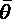。最常见的方法是基于可能性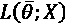，称为MLE。
事实上，给定用向量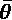参数化的统计模型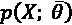，似然性可以被解释为这种模型生成训练数据的概率。因此，给定一个合适的结构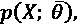，MLE提供了一个简单但非常有效的工具来定义一个生成模型，该模型绝不会受到先验信念的影响。出于我们的目的，假设我们有一个数据生成过程pT23】数据，用于绘制数据集 X :
在这种情况下，最大化用 参数化的通用统计模型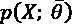的可能性的最优集合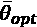被发现如下:
参数化的通用统计模型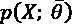的可能性的最优集合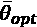被发现如下:
这种方法的优点是不受不正确前提条件的影响，因为最佳值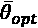完全取决于观测数据。然而，与此同时，这种方法排除了将先验知识(通常是可信的)结合到模型中的任何可能性。它只是在更宽的子空间中寻找最佳的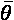，从而使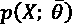最大化。即使这种方法几乎是无偏的，也有更高的概率找到一个与合理的先验有很大不同的次优解。毕竟，有几个模型太复杂了，我们无法定义一个合适的先验概率(比如，想想有大量复杂状态的强化学习策略)。因此，MLE提供了最可靠的解决方案。此外，可以证明参数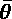的MLE以概率收敛于真实值:
另一方面，如果我们考虑贝叶斯定理，我们可以导出下面的关系:
使用似然性和先验概率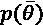获得后验概率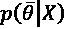，并因此考虑编码在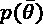中的现有知识。最大化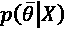的选择被称为映射方法，当有可能制定可信的先验时，或者在潜在狄利克雷分配 ( LDA )的情况下，该模型故意基于一些特定的先验假设时，它通常是MLE的良好替代方法。
不幸的是，不正确或不完整的先验分布会使模型产生偏差，导致不可接受的结果。因此，MLE通常是默认选择，即使有可能对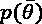的结构进行合理的假设。为了理解先验对估计的影响，让我们考虑已经观察到的n= 1000个二项分布( 对应于参数 p )实验和 k = 800的成功结果。可能性如下:
对应于参数 p )实验和 k = 800的成功结果。可能性如下:
为简单起见，让我们计算对数似然，通过将乘积转化为总和来消除乘积:
如果我们计算相对于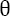的导数，并将其设置为零，我们得到如下结果:
所以，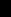的MLE为0.8，与观测值一致(我们可以说，在观测了1000个有800个成功结果的实验后， p ( X |成功 ) = 0.8)。如果我们只有数据，我们可以说成功的可能性大于失败，因为1000次实验中有800次是阳性的。
然而，在这个简单的练习之后，专家可能会告诉我们，考虑到最大可能的总体，边际概率 p ( 成功 ) = 0.001(伯努利分布与 p ( 失败)= 1-p(成功)，我们的样本不具有代表性。如果我们信任专家，我们需要使用贝叶斯定理计算后验概率:
令人惊讶的是，后验概率非常接近于零，我们应该拒绝我们最初的假设！在这一点上，有两个选择:如果我们想只基于我们的数据建立一个模型，MLE是唯一合理的选择，因为，考虑到后验，我们需要接受我们有一个非常差的数据集(这可能是从数据生成过程pT42数据中抽取样本时的偏差)。
另一方面，如果我们真的信任专家，我们有几个解决问题的选择:
- 检查取样过程以评估其质量(我们可以发现更好的取样导致更低的 k 值)
- 增加样本数量
- 计算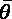的MAP估计
我建议读者用简单的模型尝试这两种方法，以便能够比较相对精度。在本书中，当需要用统计方法估计模型的参数时，我们总是会采用MLE。这种选择基于假设，即我们的数据集是从pT51】数据中正确采样的。如果这是不可能的(考虑一个必须区分马、狗和猫的图像分类器，用一个包含500匹马、500只狗和5只猫的图片的数据集构建)，我们应该扩展我们的数据集或使用数据增强技术来创建人工样本，以便重新平衡这些类别。
在这一点上，我们假设有一个从定义明确的数据生成过程中提取的数据集，我们的目标是通过最大化其可能性来优化参数化的统计模型。我们将要描述的EM算法对模型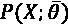的结构没有任何假设。紧接在理论部分之后，将展示和讨论几个具体的例子。
EM算法
EM算法是一个通用框架，可用于许多生成模型的优化。它最初是在Dempster A. P .，Laird N. M .，Rubin D. B .，通过EM算法从不完整数据中获得最大似然，皇家统计学会杂志，B，39(1):1–38，11/1977中提出的，作者还证明了它在不同泛型水平上的收敛性。许多机器学习问题的目标是找到一种灵活的方式来表达数据集背后的数据生成过程。例如，给定一组代表人脸的图片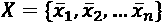，我们通常感兴趣的是发现至少一个分布pT6】数据的近似，其中训练样本是从该分布中抽取的。
原因是显而易见的:我们永远无法处理所有可能的数据点，此外，合成表达式(例如，神经网络或分布的混合)允许我们提取新的样本或评估其他数据集的可能性。
EM算法允许我们找到最佳参数集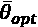，使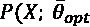最大化。这意味着，假设没有先验知识，我们已经找到了真实的潜在分布的代理。此时，任何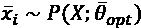都是与数据生成过程兼容的数据点(例如，如果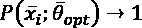，这意味着 是人脸的有效表示，即使它从未在训练阶段使用)。
是人脸的有效表示，即使它从未在训练阶段使用)。
出于我们的目的，我们将考虑一个数据集 X 和一组我们无法观察到的潜在变量 Z 。它们可以是原始模型的一部分，也可以是人为引入的，作为简化问题的一种手段。总的来说，集合 Z 有助于对模型的隐藏动态进行建模，也就是那些我们需要公设但过于复杂而无法直接包含在模型中的数学关系。例如，在隐马尔可夫模型 ( HMMs )中，潜在变量是算法的结构部分，参与新序列的描述和合成。现在让我们分析EM算法的理论部分，将注意力集中在使这种方法如此灵活和有用的关键步骤上。
用向量参数化的通用生成模型的对数似然等于:
当然，大的对数似然意味着该模型能够生成误差较小的原始分布。因此，我们的目标是找到最大化边缘化对数似然的最佳参数集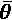(我们需要对连续变量求和或积分，因为我们无法观察到潜在变量):
理论上，这种操作是正确的，但是，不幸的是，由于其复杂性(特别是，总和的对数通常很难管理)，这几乎总是不切实际的。然而，潜在变量的存在可以帮助我们找到一个好的代理，它易于计算，并且其最大值对应于原始对数似然的最大值。
让我们从使用链式法则重写可能性的表达式开始:
如果我们考虑一个迭代过程，我们的目标是找到一个满足以下条件的过程:
我们可以从考虑一个通用步骤开始:
首先要解决的问题是和的对数。幸运的是，我们可以使用詹森不等式，它允许我们移动求和中的对数。
凸函数和詹森不等式
让我们首先定义凸函数的概念:一个函数， f ( x )，定义在凸集 D 上的被称为是凸的，如果以下适用:
如果不等式是严格的，则称函数为严格凸。直观地说，考虑到一个单变量的函数 f ( x )，之前的定义规定函数永远不会在连接两点( x 1 ，f(x1)和( x 2 ， f ( x )的线段之上在严格凸的情况下， f ( x )总是在线段之下。颠倒这些定义，我们得到函数为凹或严格凹的条件。在下图中，有凸函数和非凸函数的示例:
凸函数(左)和非凸函数(右)的例子
凸函数不仅仅在这种情况下有用。事实上，它们是不同机器学习分支(例如，深度学习)中极其重要的概念。原因很简单:凸函数可以用简单的算法轻松优化(即最小化或最大化)，而非凸函数有多个局部极大值和极小值。举个例子，如果我们考虑f(x)=–x2+x，一阶导数f’(x)=–2x+1，只有一点f’(x)= 0，那就是由于二阶导数是负的，我们确信这个点是函数的唯一全局最大值。另一方面，如果f’(x)有许多解，自动程序不能容易地理解最小值/最大值是局部的还是全局的，并且通常，算法仍然停留在次优解中。在这个重要的题外话之后，我们可以继续分析与em算法相关的问题，引入一些重要的考虑因素。
如果(且仅当)一个函数 f ( x )在 D 中是凸的，那么这个函数——f(x)在 D 中是凹的。但是，如果 f ( x )是非凸的，则不能保证—f(x)是凸的，反之亦然。
由于函数log x 在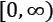中单调递增且呈凹形，–logx在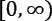中单调递减且呈凸形，如下图所示:
对数函数是凹的(左)，而–logx是凸的(右)
詹森不等式(证明被省略，但进一步的细节可以在Hansen F .，Pedersen G. K. 詹森算子不等式， arXiv:math/0204049【数学。OA])陈述，如果 f ( x )是定义在凸集 D 上的凸函数，如果我们选择满足条件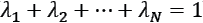的 n 点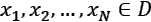和 n 常数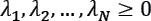，则以下适用:
因此，考虑到–logx是凸的，log x 的詹森不等式变为:
詹森不等式在EM算法中的应用
所有条件都得到满足，因为根据定义，项在[0，1]之间有界，并且所有 z的和必须总是等于1(概率定律)。上一个表达式意味着以下是正确的:
因此，如果我们最大化不等式的右边，我们也最大化了对数似然。然而，这个问题可以进一步简化，考虑到我们只优化参数向量，我们可以删除所有不依赖于它的项。因此，我们可以定义一个 Q 函数(与Q学习无关，我们将在第24章、强化学习简介中讨论)，其表达式如下:
是考虑完整数据 Y = ( X ， Z )和当前迭代参数集 的对数似然的期望值。在每次迭代中，考虑当前估计值计算，并考虑变量将其最大化。现在更清楚为什么潜在变量通常可以被人为引入:它们允许我们应用詹森不等式，并将原始表达式转换为易于评估和优化的期望值。这并不意味着布景 Z 总是人造的并且只是出于实用目的才需要。在许多情况下，隐藏变量对于更好地描述问题是必要的。例如，在我们将在本章后面讨论的高斯混合环境中，需要潜在变量来模拟每个高斯对生成一般点的贡献。由于我们不知道这些成分将如何混合在一起，我们只能假设这些变量(即因子)的存在，将它们合并到模型中，但避免对它们的行为进行任何推测。
的对数似然的期望值。在每次迭代中，考虑当前估计值计算，并考虑变量将其最大化。现在更清楚为什么潜在变量通常可以被人为引入:它们允许我们应用詹森不等式，并将原始表达式转换为易于评估和优化的期望值。这并不意味着布景 Z 总是人造的并且只是出于实用目的才需要。在许多情况下，隐藏变量对于更好地描述问题是必要的。例如，在我们将在本章后面讨论的高斯混合环境中，需要潜在变量来模拟每个高斯对生成一般点的贡献。由于我们不知道这些成分将如何混合在一起，我们只能假设这些变量(即因子)的存在，将它们合并到模型中，但避免对它们的行为进行任何推测。
EM算法通过其通用性，将优化整个参数集(包括隐藏变量),以便最大化似然性。当这个过程完成时，我们可以合理地假设集合 Z 已经以最佳方式被选择，并且每个描述了最初未知的精确行为。

而:
- 电子步:计算。通常，该步骤包括使用当前参数估计计算条件概率或其一些矩(有时，充分统计限于均值和协方差)。
- M步:找到。计算新的参数估计以最大化 Q 函数。
当对数似然停止增加或经过固定次数的迭代后，该过程结束。此时，EM算法已经找到了最大化模型的可能性的最优参数集，并且可以使用它来执行分类、聚类或新数据合成任务。接下来，我们将分析一个简单的例子，其中EM 算法用于估计部分未知分布的参数。
参数估计的一个例子
在这个例子中，我们看到了在给定一组观察值的情况下，如何将EM算法应用于未知参数的最大似然估计(受原始论文Dempster A. P .，Laird N. M .，Rubin D. B .，通过EM算法从不完整数据中获得最大似然， 《皇家统计学会杂志》，B，39(1):1–38，11/1977)中讨论的例子的启发)。这个问题相当简单，但是它帮助我们理解代理函数如何通过迭代方法找到。
让我们考虑一系列用多项式分布建模的 n 个独立实验，这些实验具有三种可能的结果xT11、xT15】2、xT19】3以及相应的概率 p 1 、 p 2 、p概率质量函数如下:
假设我们可以观察到z1=x1+x2和 x 3 ，但是我们没有任何直接访问单个值 x 1 和 x 2 因此， x 1 和 x 2 为潜变量，而 z 2 和 x 3 为观察变量。换句话说，集合Z= {x1， x 2 }参与了这个过程，但是我们没有帮助我们确定它们的精确行为的元素。因此，在这种情况下，集合 Z 的知识不仅是功能性的，也是我们为了解决问题而需要满足的要求。
概率向量以如下方式参数化:
我们的目标是给定 n ， z 1 ， x 3 ，找到的最大似然估计。让我们开始计算对数可能性:
我们可以推导出相应的 Q 函数的表达式，利用期望值运算符 E 【】的线性度:
变量xT104】1和xT108】2给定zT112】1是二项式分布的，可以表示为 的函数(我们需要在每次迭代时重新计算)。因此，的期望值变为如下:
的函数(我们需要在每次迭代时重新计算)。因此，的期望值变为如下:
而的期望值如下:
如果我们在中应用这些表达式，并计算相对于的导数，我们得到以下结果:
因此，求解 ，我们得到如下:
，我们得到如下:
此时，我们可以推导出的迭代表达式:

让我们计算 z 1 = 50和 x 3 = 10的的值:
def theta(theta_prev, z1=50.0, x3=10.0):
num = (8.0 * z1 * theta_prev) + \
(4.0 * x3 * (12.0 - theta_prev))
den = (z1 + x3) * (12.0 - theta_prev)
return num / den
theta_v = 0.01
for i in range(1000):
theta_v = theta(theta_v)
print(theta_v)
输出是:
1.999999999999999
现在让我们计算概率向量:
p = [theta_v / 6.0,
(1 - (theta_v / 4.0)),
theta_v / 12.0]
print("P=[{:.2f}, {:.2f}, {:.2f}]".
format(p[0], p[1], p[2]))
产生的输出是:
P=[0.33, 0.50, 0.17]
在这个例子中，我们已经参数化了所有的概率，考虑到z1= x1+x2，我们有一个选择的自由度。读者可以通过设置 p 1 或 p 2 中的一个的值来重复该示例，并将其他概率作为的函数。计算几乎相同，但在这种情况下，没有自由度。
一旦我们完成了这个例子，我们可以返回到一个纯粹的机器学习应用，高斯混合，以充分理解如何得出迭代程序，用于优化参数。
高斯混合
在第三章、半监督学习介绍中，我们讨论了半监督学习背景下的生成高斯混合模型。在本节中，我们将应用EM算法来推导参数更新的公式。
让我们开始考虑从数据生成过程pT10】数据中提取的数据集 X :
我们假设整个分布是由 k 高斯分布的和产生的，因此每个样本的概率可以表示如下:
在前面的表达式中，术语wT16】j=P(N = j)是jT24】th高斯的相对权重，而是均值和协方差矩阵。为了与概率定律保持一致，我们还需要强加以下条件:
不幸的是，如果我们试图直接解决这个问题，我们需要管理一个和的对数，这个过程变得非常复杂。然而，我们已经知道，只要这个技巧可以简化解决方案，就可以使用潜在变量作为助手。
让我们考虑一个单参数集和一个潜在指示矩阵 Z ，其中如果点已经由第jT37高斯生成，则每个元素Zij等于1，否则等于0。因此，每个 z ij 都是参数等于 的伯努利分布。此时，潜在变量 Z 的作用应该更清楚了。我们知道每个高斯分布对一个点的总体概率有贡献，但是我们没有更多的信息。因此，潜在变量描述了一个已知的行为，但是，最初太复杂而无法用数学方法描述(即使它必须包含在模型中)。
的伯努利分布。此时，潜在变量 Z 的作用应该更清楚了。我们知道每个高斯分布对一个点的总体概率有贡献，但是我们没有更多的信息。因此，潜在变量描述了一个已知的行为，但是，最初太复杂而无法用数学方法描述(即使它必须包含在模型中)。
索引 i 是指样本，而 j 是指高斯分布。如果我们应用链式法则和对数的性质，表达式变成如下:
第一项代表jT55】th高斯下 的概率，第二项是jT59】th高斯的相对权重。我们现在可以使用联合对数似然来计算函数:
的概率，第二项是jT59】th高斯的相对权重。我们现在可以使用联合对数似然来计算函数:
利用E[]的线性，前面的表达式变成如下:
术语对应于考虑完整数据的 z ij 的期望值，并表示给定样本的 j th 高斯的概率。考虑到贝叶斯定理，它可以被简化:
第一项是 j 第个高斯带参数下的概率，第二项是 j 第个高斯考虑相同参数集的权重。为了推导参数的迭代表达式，写出多元高斯分布的对数的完整公式很有用:
为了简化这个表达式，我们使用跟踪技巧。实际上，由于是一个标量，我们可以利用属性tr(AB)=tr(BA)和tr(C)=C，其中 A 和 B 是矩阵，:

让我们开始考虑均值的估计(只有的第一项取决于均值和协方差):
设导数等于零，我们得到如下结果:
同样，我们得到协方差矩阵的表达式:
为了获得权重的迭代表达式，过程稍微复杂一点，因为我们需要使用拉格朗日乘数。考虑到权重之和必须始终等于1，可以写出以下等式:
假设两个导数都等于零，从第一个导数开始，考虑到，我们得到以下结果:
而从二阶导数，我们得到如下:
因此，权重的最终表达式如下:
至此，我们可以形式化高斯混合算法:
- 为设置随机初始值
- e-Step–使用贝叶斯定理计算:
- m步–使用之前提供的公式计算
必须重复该过程，直到参数变得稳定。一般来说，最佳实践是同时使用阈值和最大迭代次数。
使用scikit-learn的高斯混合示例
我们现在可以使用scikit-learn实现来实现高斯混合算法。直接方法已经在第3章、半监督学习介绍中展示过。由于标准差等于1.5，生成的数据集具有三个聚类中心和适度的重叠:
from sklearn.datasets import make_blobs
nb_samples = 1000
X, Y = make_blobs(n_samples=nb_samples,
n_features=2,
centers=3, cluster_std=1.5,
random_state=1000)
相应的图如下图所示:
高斯混合数据集
scikit-learn实现基于GaussianMixture类，该类接受高斯数(n_components)和协方差类型(covariance_type)作为参数，如果所有组件都有自己的矩阵，则这些参数可以是full(默认值)；如果矩阵是共享的，则可以是tied；如果所有组件都有自己的对角矩阵，则可以是diag(这种情况会使特性之间不相关)；如果每个高斯在每个方向上都对称，则可以是spherical。其他参数允许设置正则化和初始化因子(有关更多信息，读者可以直接查看文档)。我们的实现基于完全协方差:
from sklearn.mixture import GaussianMixture gm = GaussianMixture(n_components=3) gm.fit(X)
拟合模型后，可以通过实例变量weights_、means_和covariances_访问学习到的参数:
print(gm.weights_)
输出是:
[0.33021183 0.32825195 0.34153622]
我们可以对手段做同样的事情:
print(gm.means_)
产生的矢量是:
[[ 9.04405804 -0.37402889] [ 3.03380714 -7.69379648] [ 7.36636358 -5.77704133]]
最后，我们可以计算协方差矩阵:
print(gm.covariances_)
输出是:
[[[ 2.11018067 0.02628044] [ 0.02628044 2.21420326]] [[ 2.34039729 0.08198461] [ 0.08198461 2.36352386]] [[ 2.72613075 -0.00423492] [-0.00423492 2.40306437]]]
考虑到协方差矩阵，我们已经可以看到特征是非常不相关的，并且高斯分布几乎是球形的。通过Yp = gm.transform(X)命令将每个点分配到相应的聚类(高斯分布)中，可以得到最终的图形:
通过应用具有三个分量的高斯混合获得的标记数据集
读者应该已经注意到高斯混合和k-means之间有很强的相似性(我们将在第六章、聚类和无监督模型中讨论)。特别地，我们可以说k-means是带有协方差矩阵的球面高斯混合的一个特例。该条件将该方法从软聚类转换为硬聚类，在软聚类中，每个样本属于所有具有精确概率分布的聚类，在硬聚类中，通过考虑样本和质心(或均值)之间的最短距离来完成分配。由于这个原因，在一些书中，高斯混合算法也被称为软k-means。我们将在那一章介绍的一个概念上类似的方法是模糊k-means，它基于以隶属函数为特征的赋值，类似于概率分布。
使用AIC和BIC确定组件的最佳数量
一般来说，最优数量的高斯函数是未知的，取决于底层数据生成过程的结构。在本节中，我们展示了两种相对简单的方法(没有数学证明)来找到这个值，作为最大对数似然和模型复杂性之间的权衡。第一种方法称为AIC，或Akaike信息标准，定义如下:
在前面的表达式中， L opt 是实现的最大对数似然，而 n 是参数的数量(一般来说，n是基于模型中涉及的参数的总数，但是，很多时候，组件的数量与 n 成比例；因此，我们使用n作为组件数量的代表)。AIC的目标是测量更多组件对对数似然的影响，很容易理解，AIC越低，解决方案越理想。事实上， L opt 被认为是负对数似然。因此，大的AIC值意味着过度的模型复杂性，这种复杂性不能通过极大似然估计的相应改进来平衡。罚项2 n 可能不总是合适的，因为作为n的函数的线性度不能以不合理的额外复杂度为代价来惩罚产生稍好的MLE 的模型。AIC的替代方案是由贝叶斯信息准则 ( BIC )提供的，它采用了更强的惩罚条款:
在这种情况下，比例不再是线性的，元件的数量必须产生一个较大的最大似然选择。在实际应用中，AIC往往是首选，但由于它往往会过度拟合，有必要使用一个适当的大样本大小。另一方面，当满足这个条件时(从理论上来说，需要渐近地考虑问题，所以当时)，BIC的最小值对应于一个模型 p m ，该模型最小化与 p 数据(即)的Kullback-Leibler散度。然而，由于这种情况往往需要非常大的样本量，AIC和BIC往往倾向于选择相同的模型。
考虑到我们的例子，我们知道基本事实是 n = 3，但是我们想检查AIC和BIC的不同值，以确保选择是正确的:
nb_components = [2, 3, 4, 5, 6, 7, 8]
aics = []
bics = []
for n in nb_components:
gm = GaussianMixture(n_components=n,
max_iter=1000,
random_state=1000)
gm.fit(X)
aics.append(gm.aic(X))
bics.append(gm.bic(X))
AIC和BIC的组件数量不同
AIC和BIC 都确认 n = 3是最优选择，但是有趣的是注意到当 n = 2时AIC和BIC的惩罚效果。前者有一个峰值，而后者略大于最佳值。这是罚分 n log n (约等于1.38)的结果，小于4 (2 n )。相反，当n随着来自BIC的更强惩罚效应而增加时，两个指数非常相似(趋势几乎是线性的，而当nT54】5时，AIC减小了斜率)。作为一般规则，我们建议仅当分数降低相对于 AIC明显较大时，才分析两个值并选择BIC(以防两个最小值不同)(例如，可以考虑两个相邻值来比较相对降低，并且仅当该值大于预定义的阈值，例如0.3时，才选择BIC)。
使用贝叶斯高斯混合的自动组件选择
有时，确定最合适的组件数量是一个问题，可以通过利用完整的贝叶斯框架和对权重施加先验分布来解决(该方法的完整细节可以在Nasios N .，Bors A. G., 高斯混合模型的变分学习， IEEE Transactions on Systems，Man and Cybernetics，36/4，2006中找到)。特别是，我们可以用以下公式推导出权重的后验分布:
在标准EM方法中，我们最大化，这是可能性(为了避免混淆，我们使用符号概括了参数向量)。然而，如果我们有关于参数的先验信息，我们可以尝试找到最佳后验。不幸的是，虽然EM算法采用了MLE，它可以以封闭形式求解，但MAP估计通常非常复杂，因为它需要找到归一化常数，并且这一步需要积分。通过使用共轭先验可以得到简化。如果 p ( y )和q(y | X)属于同一个族，则分布 p ( y )是关于后验 q ( y | X )和似然 L ( X | y )的共轭先验
共轭先验的使用允许我们通过理解似然性的影响(其通常作用于先验分布的参数)来直接处理后验。在这个特定的上下文中，我们没有兴趣讨论所有的共轭先验(关于均值、协方差和权重)，但我们只关注权重(对细节感兴趣的读者可以查看前面提到的论文)。正如在主要部分中所讨论的，我们想要施加条件:
仅考虑权重的可能性是多项式的，因为我们需要找到使点被分配给最接近的高斯的概率最大化的权重(或者，从相反的角度考虑问题，我们需要调整权重以便使高斯生成样本的概率最大化)。
多项式分布的共轭先验是用向量参数化的狄利克雷分布，该向量具有与相同的维数。狄利克雷分布本质上是稀疏的，也就是说，它倾向于生成具有许多零分量的样本。因此，这一选择完美地满足了我们寻找最佳高斯数的要求(与相关联的高斯被认为是不存在的)。直接使用狄利克雷分布来解决问题是可行的，但是仍然有太多的参数(向量的组件)需要管理。或者，也可以采用狄利克雷过程，用单个重量集中系数 w c 进行参数化。这样的过程在采样时输出概率分布，并且稀疏程度与wc成比例。
现在让我们考虑之前定义的数据集，并应用贝叶斯高斯混合，其中 n = 8， w c = 1:
from sklearn.mixture import BayesianGaussianMixture
gm = BayesianGaussianMixture(n_components=8,
max_iter=10000,
weight_concentration_prior=1,
random_state=1000)
gm.fit(X)
print("Weights (wc = 1):")
for w in gm.weights_:
print("{:.2f}".format(w))
输出是:
Weights (wc = 1): 0.00 0.35 0.00 0.32 0.00 0.00 0.00 0.32
正如可能看到的，只有三个组件被选中，而所有其他权重都被推向零。根据数据集，通过改变权重浓度先验参数可以获得非常不同的结果，这可能是该算法最繁琐的弱点。
因此，探索应该从选择非常不同的值(例如， w c = {0.1，10，1000})开始，观察差异，然后分析活动组件数量保持不变的范围。例如，在我们的情况下，由于数据集本质上是高斯混合(因为它是通过采样3个高斯生成的)，权重集中系数的影响有限，自然选择 n = 4。
反之，如果 p 数据具有更复杂的结构，低的 w c 值倾向于减少活动分量的数量(根据LT23】1范数的强度)，而大的值使狄利克雷分布越来越密集。然而，一个理想的方案应该包括对最佳浓度参数的网格搜索和对AIC和BIC的连续分析。当不确定性较高时，也可以通过使用AIC选择 n 的潜在范围开始，然后通过调整重量集中参数将放大。有关该方法的更多详细信息，请参考Bonaccorso G .，用Python进行手动无监督学习， Packt Publishing，2018。
总结
在这一章中，我们介绍了EM算法，解释了它在许多统计学习环境中应用的理由。我们还讨论了隐藏(潜在)变量的基本作用，以便导出一个更容易最大化的表达式( Q 函数)。
我们应用EM算法解决了一个简单的参数估计问题，然后证明了高斯混合估计公式。我们展示了如何使用scikit-learn实现，而不是从头开始编写整个过程(就像在第3章、半监督学习介绍)。
在下一章中，我们将介绍和分析三种不同的成分提取方法:因子分析、PCA和FastICA。
延伸阅读
- Dempster A. P .、Laird N. M .、Rubin D. B .，通过EM算法从不完整数据中获得最大似然，皇家统计学会杂志，B，39(1):1–38，11/1977
- Hansen F .，Pedersen G. K. Jensen的算子不等式，arXiv:math/0204049【数学。OA]
- Rubin D .，Thayer D .，用于ML因子分析的EM算法，心理计量学，47/1982，第1期
- Ghahramani Z .，Hinton G. E .，混合因子分析仪的EM算法，CRC-TG-96-1，1996年5月
- Hyvarinen A .，Oja E .，独立成分分析:算法和应用，神经网络13/2000
- Luenberger D. G., 向量空间方法优化，Wiley，1997
- Ledoit O .，Wolf M .，一种适用于高维协方差矩阵的条件良好的估计量，多元分析杂志，88，2004年2月
- Minka T.P .，PCA维度的自动选择，NIPS 2000
- Nasios N .，Bors A. G .，高斯混合模型的变分学习， IEEE系统、人与控制论汇刊，36/4，2006
- Bonaccorso G .，用Python进行动手无监督学习，Packt出版社，2018